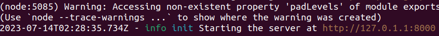
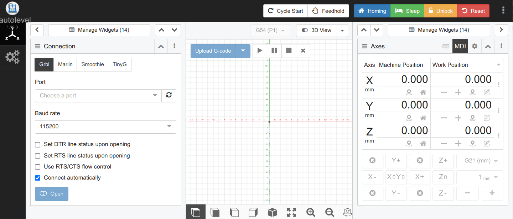
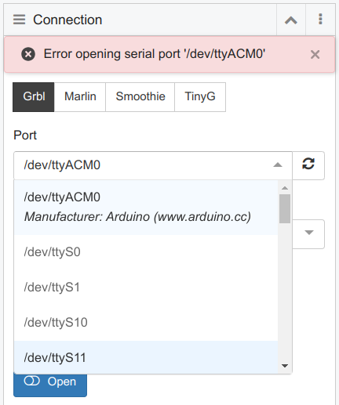
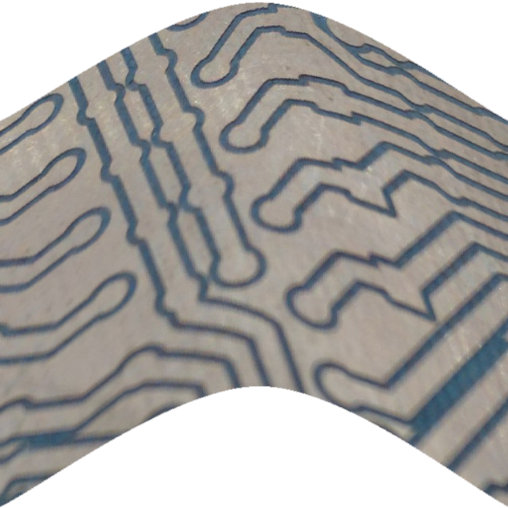
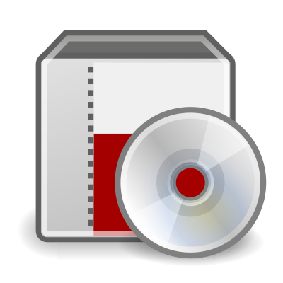
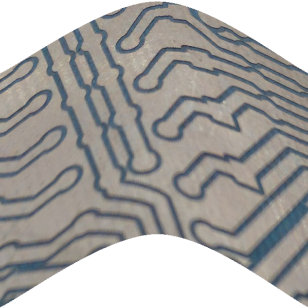
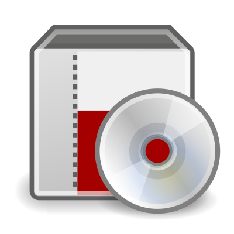

Ubuntu and cncjs AutoLevel
There are several ways to install cncjs:
- source code
- Electron app
- Docker
AutoLevel is currently not part of official cncjs, therefore the only way to get AutoLevel is to run from source
code.
In this instance, we will use Ubuntu 22.04 as the operating system.
We will install cncjs with the AutoLevel modification from the source code, build the project,
and run the app.
Open a terminal in Ubuntu.
Install node version manager nvm
The current AutoLevel widget is based on cncjs version 1.10.3.
cncjs 1.10.3 will not run with the latest node version, but it will run with node version 14.
The node version manager nvm allows to choose the node version.
curl -o- https://raw.githubusercontent.com/nvm-sh/nvm/v0.39.1/install.sh | bash
log out and back in so that .bash_rc is run
List available versions:
nvm list-remote
Install node
Install node version 14 by
nvm install 14
Switch node version
Every time we open the terminal, we have to make sure that we are using node version 14.
There are ways to make this switch permanent, but I have tried and they didn't work, leading to errors that were
hard to trace.
The saftest way to ensure the correct node version is to run this every time you open the terminal:
nvm use 14
Install yarn
yarn is the package manager used to manage this project.
Install yarn:
npm install -g yarn
Retrieve the source code
Clone the cncjs repository with the AutoLevel modification to your local computer
git clone https://github.com/atmelino/cncjs_1_10_3_AL.git
and switch to the folder in which cncjs_1_10_3_AL is installed.
cd cncjs_1_10_3_AL
Initial project install
Run
yarn
to install the dependencies, then run
yarn build
to build the app.
Start the cncjs server
Run
bin/cncjs
You should see something similar to this:

Hold the CTRL-key on the keyboard and mouse-click on the link
http://127.0.1.1:8000/
You should see a browser opening, displaying the workspace of cncjs

Arduino Serial Port Permission
The GRBL software runs on an Arduino, for example an Arduino Mega.
When the Arduino Mega is connected, the port appears in the Connection widget as /dev/ttyACM0.
However, an error message may appear:
"Error opening serial port"

https://www.arduino.cc/en/Guide/Linux#toc6
To resolve:
Test current permissons:
ls -l /dev/ttyACM*
gives
crw-rw---- 1 root dialout 188, 0 5 apr 23.01 ttyACM0
so root is owner.
Solution: add our user to the group:
sudo usermod -a -G dialout user
To put the change into effect:
logging out and back in should theoretically work,
but in my case, only rebooting worked.
 


